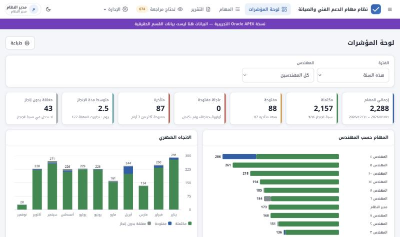
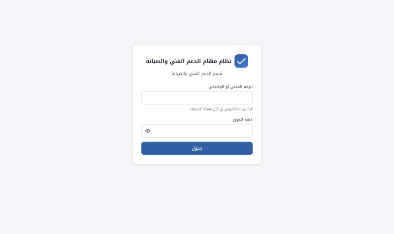
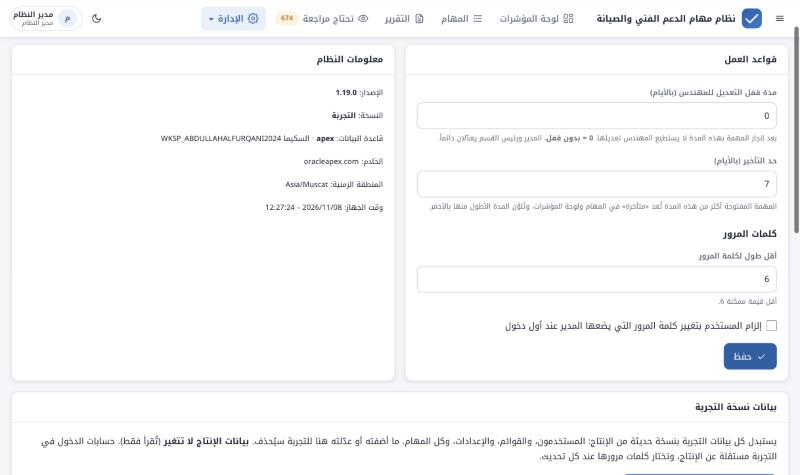
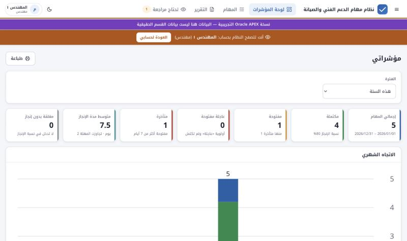
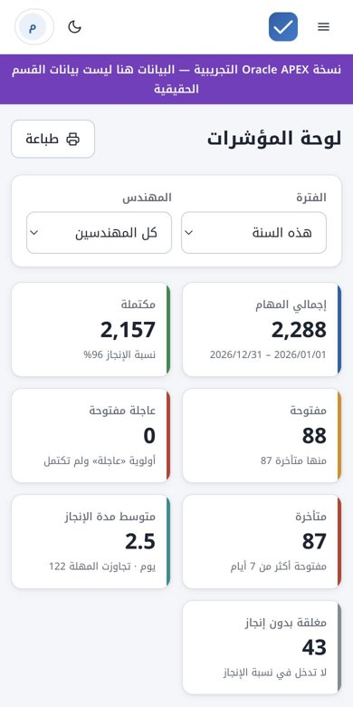
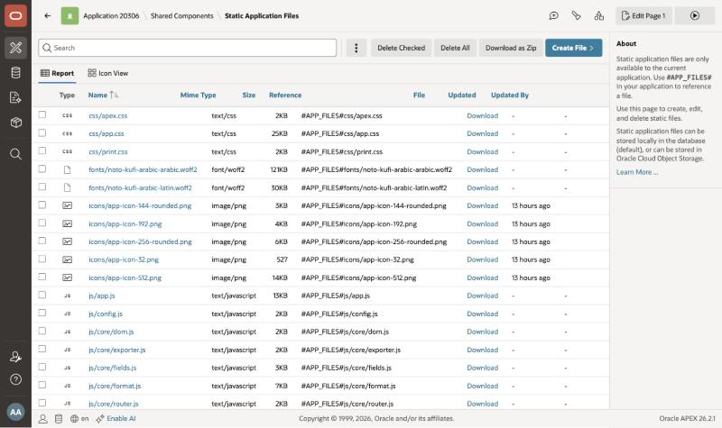
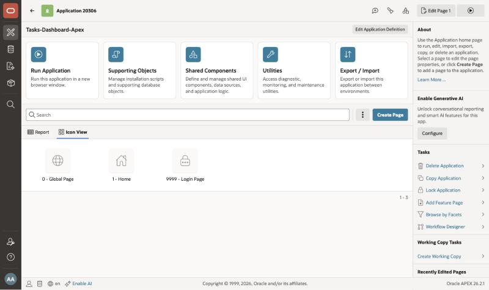
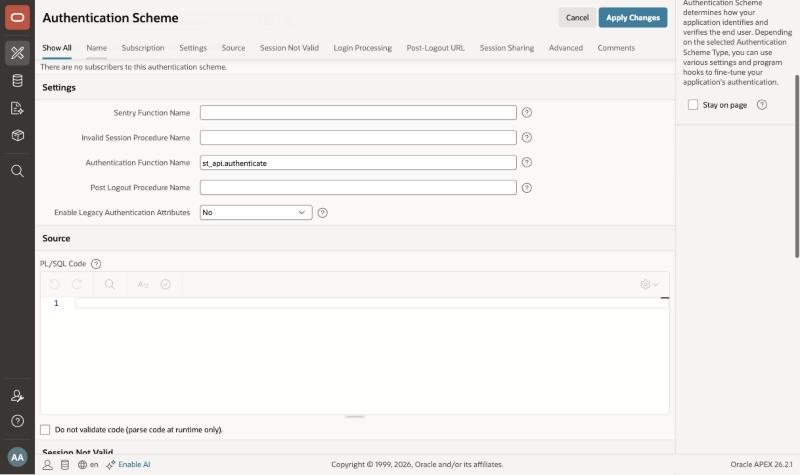
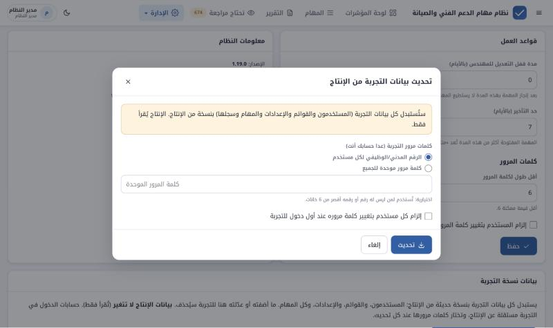

الفصول وكل خطوة مع رقم صفحتها
لمن كُتب، وكيف يُقرأ
يوثّق هذا المستند عملية نقل نظام مهام الدعم الفني والصيانة من Supabase إلى Oracle APEX، التي بدأت ليلة 8 نوفمبر 2026 وانتهت ظهر اليوم نفسه. يشرح كل خطوة: ما الطلب، وما الذي نُفّذ، وما المشكلة التي ظهرت وكيف حُلّت، وما يلزم المهندس معرفته. وهو مستقل عن سجل التطوير والإصدارات الأساسي، ومبني بنفس فصوله وترتيبه.
الفصل 1 (الملخص التنفيذي) يكفي لمعرفة ما تم، ثم الفصل 9 (ما تبقى). والفصل 6 يشرح أسباب القرارات.
الفصل 2: الشاشات نفسها، والدخول بالرقم نفسه. ما يتغير للمستخدم مذكور في الصناديق الخضراء داخل الفصل 5.
الفصول 3 و4 و7 و8، والصناديق الزرقاء في كل خطوة، والملحق (أ) للبنية كاملة، والملحق (ب) لإعادة التركيب من الصفر.
| الرمز | المعنى |
|---|---|
| ميزة | جزء جديد من النظام في نسخة APEX |
| إصلاح | مشكلة ظهرت أثناء التركيب أو الاختبار، وحُلّت |
| بنية | حسابات أو مستودع أو تركيب، لا يغيّر شاشات المستخدم |
| SQL | الخطوة تحتاج تنفيذ ملف على قاعدة بيانات Oracle |
النقل لم يغيّر رقم إصدار النظام: الشاشات هي نفسها شاشات الإصدار 1.19.0. لذلك تُرقَّم خطوات النقل بالحرف A (من APEX) ثم رقم الخطوة بالترتيب الزمني، من A1 إلى A13.
صور هذا المستند مأخوذة من نسخة APEX نفسها، وهي تعمل ببيانات منقولة من الإنتاج. لأن المستودع عام، استُبدلت أسماء الموظفين في الصور بـ«المهندس ١، ٢…» وأُخفي البريد الإلكتروني قبل الالتقاط. الأرقام (عدد المهام والنسب) حقيقية.
للإدارة ما تم في صفحتين
طُلب تحويل النظام بالكامل ليعمل بتقنية Oracle APEX، في نفس المستودع، بدءاً من تطبيق APEX فارغ. النتيجة: نسخة تجريبية كاملة تعمل على apex.oracle.com بنفس الشاشات والتصميم والصلاحيات، وفيها كل بيانات الإنتاج، دون أي تعديل على نسخة Supabase أو على الموقع الذي يستخدمه القسم.
apex داخل مجلد apex/، فلا يصل لموقع القسم إلا بقرار.نفس الجداول والقواعد والصلاحيات وسجل التعديلات، مكتوبة بـ PL/SQL داخل قاعدة Oracle. خبرة القسم في Oracle تنطبق عليها مباشرة.
الشاشات والتصميم والوضع الليلي والجوال ونموذج المهمة والتقارير كما هي، لأن ملفات الواجهة نفسها محفوظة داخل تطبيق APEX.
أي تحسين على الواجهة في نسخة Supabase ينتقل إلى APEX بإعادة بناء ملف التطبيق واستيراده، دون نسخ يدوي.
لا شيء في نسخة Supabase تغيّر، وبيانات الإنتاج تُقرأ فقط. نسخة APEX منفصلة تماماً.
تفاصيل المتبقي والمخاطر في الفصل 9.
للمستخدم للإدارة ما يراه الموظف في نسخة APEX
الشاشات في نسخة APEX هي نفسها شاشات النظام، بنفس الترتيب والألوان والخط. الفرق الوحيد الظاهر: الشريط البنفسجي أعلى الصفحة يقول «نسخة Oracle APEX التجريبية».
| الشاشة | ماذا تقدّم | على APEX |
|---|---|---|
| الدخول | الرقم المدني/الوظيفي أو البريد، وكلمة المرور | جُرّبت |
| لوحة المؤشرات | البطاقات والرسوم وأداء المهندسين وأقدم المتأخرات | جُرّبت بالأرقام الحقيقية |
| المهام | الفلاتر والبحث، والإضافة والتعديل والحذف، والشارات | جُرّبت بمهمة تجربة حُذفت |
| التقرير | الفلاتر والترتيب والتصدير والطباعة | تفتح؛ التصدير والطباعة لم تُجرَّب |
| تحتاج مراجعة | المهام المستوردة التي فيها ملاحظة | جُرّبت (العدد يظهر في الشريط) |
| سجل التعديلات | من غيّر ماذا ومتى، القديم والجديد | جُرّبت مع السجل المنقول |
| القوائم | أنواع المهام والمراسلات والحالات | تفتح؛ التعديل لم يُجرَّب |
| المستخدمون | الحسابات والأدوار، و«الدخول بحسابه» | جُرّب الدخول بحساب مهندس |
| الاستيراد | Excel أو CSV مع المعاينة والمراجعة | تفتح؛ لم يُجرَّب بملف |
| الإعدادات | القواعد، والإعلان، ونقل بيانات الإنتاج | جُرّبت بنقل البيانات كاملة |



الأدوار الأربعة وصلاحياتها مطابقة تماماً لنسخة Supabase. الفرق في مكان فرضها: في Supabase بسياسات RLS، وفي APEX داخل الحزمة ST_API التي يمر بها كل طلب.
| مدير النظام | رئيس القسم | مهندس | مشاهد | |
|---|---|---|---|---|
| يرى المهام والتقارير | الكل | الكل | مهامه فقط | الكل |
| يضيف مهمة | لأي مهندس | لأي مهندس | لنفسه | ✗ |
| يعدّل مهمة | أي مهمة | أي مهمة | مهامه حتى تنتهي مدة القفل | ✗ |
| الحذف والاستعادة | ✔ | ✗ | ✗ | ✗ |
| القوائم وسجل التعديلات | ✔ | ✔ | ✗ | ✗ |
| المستخدمون والإعدادات والاستيراد | ✔ | ✗ | ✗ | ✗ |


للمهندس للإدارة أين تعمل كل نسخة، وما المشترك بينهما
صُمّم النظام من البداية بحيث لا تعرف الشاشات أي قاعدة بيانات تعمل خلفها: كل الشاشات تتعامل مع «محوّل» واحد. لذلك لم يحتج النقل إلى إعادة كتابة الشاشات، بل إلى ثلاثة أشياء: قاعدة بيانات Oracle بنفس القواعد، ومحوّل جديد يتحدث مع APEX، وأداة تضع الواجهة داخل تطبيق APEX.
API.ST_API (المنطق والصلاحيات)، ومشغّلان (القواعد والسجل)، و9 جداول تبدأ بـ ST_.| الجزء | نسخة Supabase | نسخة APEX |
|---|---|---|
| الواجهة | ملفات المستودع على GitHub Pages | نفس الملفات داخل التطبيق (Static Application Files) |
| قاعدة البيانات | PostgreSQL، سكيما support_tasks | Oracle 26ai، جداول ST_ في سكيما المساحة |
| الصلاحيات | سياسات RLS لكل جدول | فحص في الحزمة ST_API لكل طلب |
| القواعد والسجل | دوال ومشغّلات PL/pgSQL | مشغّلان PL/SQL بنفس القواعد ونفس الرسائل العربية |
| الدخول | Supabase Auth ودالة auth-login | مصادقة APEX مخصصة st_api.authenticate |
| كلمات المرور | تديرها Supabase | SHA-256 مكرر 500 مرة مع salt لكل مستخدم |
| إدارة المستخدمين | دالة الخادم admin-users | داخل الحزمة ST_API |
| نقل بيانات الإنتاج | دالة الخادم refresh-staging | المتصفح يقرأ الإنتاج بحساب المدير ويرسل إلى APEX على دفعات |
| المحوّل | js/data/supabase/ | apex/web/js/data/apex/ |

API في APEXst_api.ajaxللمهندس للإدارة كيف يصل أي تعديل إلى نسخة APEX
apex/node apex/tools/build.mjs02_api.sql: SQL Workshopjs/ وcss/)، فيستفيد منه النظامان. ما يخص APEX وحده في apex/web/.apex/f116280.sql.02_api.sql في SQL Workshop. يستبدل الحزمة والمشغّلين دون أن يمس البيانات.
apex. استيراد النسخة السابقة من GitHub يعيد التطبيق كما كان خلال دقيقة، والبيانات لا تتأثر.كل خطوة: الطلب، وما نُفّذ، والمشكلة وحلها
الخطوات مرتبة زمنياً في خمس مراحل. ما بين «» في خانة الطلب هو نص الطلب كما كُتب. الأوقات بتوقيت مسقط، يوم 2026/11/08.
| المرحلة | الخطوات | المحور |
|---|---|---|
| الأولى | A1 – A2 | الطلب، والتخطيط، والصلاحيات |
| الثانية | A3 – A4 | بناء قاعدة البيانات والمحوّل وأداة البناء |
| الثالثة | A5 – A9 | التركيب على APEX ومشكلاته |
| الرابعة | A10 – A12 | الاختبار ونقل بيانات الإنتاج |
| الخامسة | A13 | التوثيق |
| السؤال | القرار |
|---|---|
| مصدر الكود | ربط المستودع مباشرة |
| مكان نسخة APEX | مجلد مستقل بجانب نسخة Supabase |
| البيانات | تصدير من بيانات Supabase |
| الدخول والصلاحيات | مصادقة مخصصة بالأدوار الأربعة |
| الشكل | محاكاة التصميم الحالي |
| البيئة | apex.oracle.com للتجربة فقط |
| شكل التسليم | ملفات منفصلة: سكربتات الجداول، ثم ملف التطبيق |
apex من staging. والاختبار في المتصفح المدمج بعد دخول المالك.01_schema.sql: تسعة جداول تبدأ بـ ST_ حتى لا تختلط بجداول المساحة الأخرى، والعرض ST_V_TASKS. المدة محسوبة تلقائياً (عمود افتراضي).02_api.sql: الحزمة ST_API تحل محل ثلاثة أشياء في Supabase: سياسات RLS، ودالة الدخول، ودالة إدارة المستخدمين. ومعها مشغّلان: قواعد الحفظ، وسجل التعديلات بنفس شكل JSON.03_seed.sql: القوائم والإعدادات الأولية. و04_first_admin.sql: أول مدير. وuninstall.sql: الحذف لإعادة التركيب.setting_key وsetting_value لأن KEY وVALUE كلمات محجوزة في دوال JSON.apex/web/js/data/apex/: يطبّق نفس «العقد» الذي يطبّقه محوّل Supabase، فلا تشعر الشاشات بالفرق.migrate.js): يطلب رقم وكلمة مرور مدير النظام في الإنتاج، ويقرأ كل شيء من Supabase مباشرة من المتصفح، ثم يرسله إلى APEX على دفعات. لا يُحفظ الدخول ولا يصل إلى خادم APEX.apex/tools/build.mjs: تبدأ من ملف التطبيق الفارغ الذي رُفع، وتضيف إليه 41 ملفاً من الواجهة، وعملية API، والمصادقة المخصصة، وصفحة دخول بتصميم النظام.ST_ في المساحة، حتى لا يُستبدل شيء.| الخطأ | السبب والحل |
|---|---|
| PLS-00231 | دوال خاصة بالحزمة استُدعيت داخل جمل SQL في سبعة مواضع، وOracle لا يسمح بذلك. الحل: قراءة القيم في متغيرات أولاً. |
| PLS-00103 | تعريف نوع داخل جسم الحزمة بعد الدوال. الحل: نقله إلى أعلى الجسم. |
| ORA-40573 | كائن JSON استُخدم داخل جملة إدخال في مشغّل السجل. الحل: تحويله إلى نص في متغير قبل الإدخال. |
user_errors. ثم اختبار داخل قاعدة البيانات: كلمة المرور المشفّرة، ونقل المهمة لمهندس آخر (يُرفض)، والمكتملة بلا تاريخ (تُرفض)، وأسباب المراجعة (تُرفض لغير الاستيراد)، والمدة، وشكل السجل. كلها كما في Supabase.f116280.sql من App Builder دون أخطاء، برقم 20306. صفحة الدخول ظهرت بتصميم النظام، وفحص الدخول أعاد الرسائل العربية.0000000 مظلَّلاً في المحرر عند الضغط على Run، وSQL Commands تنفّذ النص المظلل فقط إن وُجد. الحل: إزالة التظليل وإعادة التنفيذ.authentication_function)، وملف التطبيق كان يستخدم الصيغة القديمة، فبقيت الدالة فارغة.
main، وهو اسم العنصر الذي ترسم فيه الواجهة شاشاتها. فرُسمت داخل نموذج APEX، والمتصفح يحذف أي نموذج داخل نموذج، فلم تجد لوحة المؤشرات نموذج فلاترها.
apex/README.md: دليل التركيب من الصفر والتحديث، بالعربية.docs/apex-report/، بنفس تنسيق سجل التطوير الأساسي. أداة بناء ملف PDF أصبحت تقبل مصدراً ومخرجاً، فتبني المستندين.للإدارة للمهندس لماذا صار النقل على ما هو عليه
| القرار | المبرر |
|---|---|
| الواجهة الحالية فوق APEX (خيار أ) | يحفظ التصميم والسلوك حرفياً، وينتهي في ليلة واحدة، وكل تحسين على الواجهة يخدم النسختين. العيب المقبول: الشاشات لا تُعدَّل من Page Designer. |
| مجلد مستقل وفرع مستقل | لا شيء يتغير في نسخة Supabase أو في موقع القسم. القرار بدمج النسخة أو تركها يبقى لاحقاً. |
كل المنطق في حزمة واحدة ST_API | باب واحد لكل الطلبات يسهل فحص الصلاحيات ومراجعتها، ويقابل سياسات RLS في Supabase. |
| المشغّلات للقواعد والسجل | القواعد تُطبَّق حتى على ما يُدخل من SQL Workshop، والسجل لا يمكن تجاوزه. |
الجداول بالبادئة ST_ | المساحة فيها جداول أخرى للمالك، والبادئة تمنع أي تداخل وتسهل الحذف الكامل. |
| كلمة المرور = الرقم، بلا إلزام التغيير | طلب صريح، لأن النسخة للتجربة. يجب تغييرها قبل أي استخدام حقيقي. |
| النقل من المتصفح بحساب المدير | لا يحتاج أسراراً محفوظة في APEX أو صلاحيات شبكة من قاعدة Oracle إلى Supabase. والإنتاج يُقرأ فقط. |
| أداة بناء بدل نسخ يدوي | ملف التطبيق يُولَّد من ملفات المستودع، فلا تختلف نسخة APEX عن الأصل دون علم. |
| apex.oracle.com للتجربة | مجاني وجاهز. الاستخدام الفعلي يحتاج قراراً آخر (الفصل 9). |
للمهندس للإدارة المبادئ المطبّقة في نسخة APEX
لا تُخزن نصاً أبداً: SHA-256 مكرر 500 مرة مع salt مختلف لكل مستخدم. ورسالة خطأ واحدة عند الدخول، وتأخير بسيط، وإيقاف 15 دقيقة بعد 8 محاولات خاطئة.
كل طلب يمر بـ ST_API التي تحدد المستخدم من جلسة APEX لا من المتصفح، ثم تفحص دوره. المهندس لا يصل إلا لمهامه حتى لو حاول من خارج الواجهة.
عملية API لا تعمل إلا لمستخدم مسجّل الدخول. ولا توجد صفحات APEX أخرى أو تقارير تكشف الجداول.
لمدير النظام فقط، ولا يكشف كلمة مرور المستخدم ولا يغيّرها، وينتهي تلقائياً بعد ساعة.
رقم وكلمة مرور الإنتاج يُكتبان في نافذة النقل ويُستخدمان من المتصفح مباشرة. لا يُحفظان، ولا يصلان إلى خادم APEX.
كل تغيير على المهام يُسجَّل تلقائياً بمشغّل، ولا يوجد في الحزمة أي طريق لتعديل السجل.
للمهندس كيف تأكدنا أن نسخة APEX تعمل مثل الأصل
user_errors)| المستوى | الاختبار |
|---|---|
| قاعدة البيانات | كلمة المرور المشفّرة وتحققها، والإدخال باسم المستخدم الحالي، ورفض نقل المهمة لمهندس آخر، ورفض المكتملة بلا تاريخ، ورفض أسباب المراجعة لغير الاستيراد، وحساب المدة، وشكل JSON في السجل للإضافة والتعديل. |
| الدخول | رسائل الخطأ العربية، والدخول بالرقم، وإعادة التحميل دون خروج. |
| الشاشات | فتح الشاشات العشر، وإضافة مهمة وتعديلها وحذفها، والسجل بعدها. |
| الصلاحيات | الدخول بحساب مهندس: قائمة مختصرة، ولا فلتر مهندسين، ومهامه فقط، ثم العودة لحساب المدير. |
| البيانات | نقل الإنتاج كاملاً، ومطابقة الأعداد، وظهور الأرقام الحقيقية في المؤشرات. |
| النوع | الكائنات | الحالة |
|---|---|---|
| جداول (9) | ST_PROFILES ST_TASKS ST_TASK_AUDIT ST_TASK_TYPES ST_CORRESPONDENCE_TYPES ST_TASK_STATUSES ST_APP_SETTINGS ST_LOGIN_FAILURES ST_ACTING | VALID |
| عرض | ST_V_TASKS | VALID |
| حزمة | ST_API (المواصفات والجسم) | VALID |
| مشغّلات | ST_TASKS_BIU (القواعد) وST_TASKS_AUDIT (السجل) | VALID |
| البند | الحجم التقريبي |
|---|---|
| قاعدة البيانات (SQL وPL/SQL) | 1,700 سطر في 5 ملفات |
| المحوّل والنقل وملفات APEX الخاصة (JavaScript وCSS) | 560 سطراً |
| أداة البناء | 330 سطراً |
| ملفات الواجهة داخل التطبيق | 41 ملفاً |
| ملف التطبيق الناتج | نحو 1 MB |
| ملفات النظام الأصلية المعدّلة | 0 |
للإدارة للمهندس قبل أي استخدام فعلي لنسخة APEX
| # | التجربة | الحالة |
|---|---|---|
| 1 | الاستيراد من ملف Excel أو CSV كاملاً حتى الحفظ | لم تُجرَّب |
| 2 | التصدير إلى Excel وCSV، والطباعة أو حفظ PDF | لم تُجرَّب |
| 3 | تغيير كلمة المرور من المستخدم نفسه | لم تُجرَّب |
| 4 | إضافة مستخدم وتعديله وتعطيله، و«كلمات المرور للكل» | لم تُجرَّب |
| 5 | تعديل القوائم، وحفظ الإعدادات والإعلان | لم تُجرَّب |
| 6 | دخول مهندس بحسابه الحقيقي، وقفل التعديل، والاستعادة بعد الحذف | لم تُجرَّب |
| القرار | التفاصيل |
|---|---|
| مكان التشغيل الفعلي | apex.oracle.com للتجربة فقط. الاستخدام الفعلي يحتاج قاعدة Oracle مع APEX خاصة بالقسم، أو Oracle Cloud (Autonomous Database). التركيب هناك بنفس الملفات والخطوات (الملحق ب). |
دمج فرع apex | إن دُمج في staging ثم main، يُستثنى مجلد apex/ من النشر في pages.yml كما يُستثنى docs/، حتى لا تُنشر ملفات التطبيق على موقع القسم. |
| حساب «مزامنة التجربة» | انتقل مع المستخدمين من الإنتاج ولا عمل له في APEX. يُعطَّل من شاشة المستخدمين. |
| كلمات المرور | تغييرها من الأرقام إلى كلمات خاصة قبل أي استخدام حقيقي، وتفعيل «إلزام التغيير» إن رُغب. |
| الخطر | المعالجة |
|---|---|
| اختلاف النسختين مع الوقت | أداة البناء تأخذ الواجهة من المستودع نفسه، وتتوقف إن تغيّر نص تعدّله. أي تحديث على الواجهة يُبنى ويُستورد. |
| تحديث APEX يغيّر صيغة ملف التطبيق | حدث فعلاً مع إعداد المصادقة (A7). الملف الأساسي يُصدَّر من جديد من APEX عند الترقية، وأداة البناء تبني عليه. |
| انتهاء جلسة مساحة العمل | جلسة App Builder تنتهي بعد مدة، فيلزم الدخول من جديد قبل أي تحديث. لا يؤثر على مستخدمي التطبيق. |
| شروط apex.oracle.com | للتجربة فقط وقد تتغير شروطه. البيانات تبقى قابلة للنقل من الإنتاج متى شئنا. |
| غياب الاختبارات الآلية | كتابة اختبارات PL/SQL للحزمة على غرار اختبارات نسخة Supabase قبل أي استخدام فعلي. |
للمهندس المساحة والمعرّفات والملفات. لا قيم سرية في هذا الملحق
| البند | القيمة |
|---|---|
| المستودع والفرع | abdullah-alfurqani-2024/Tasks-Dashboard-Live، الفرع apex |
| مساحة APEX | ABDULLAH.ALFURQANI.2024 على oracleapex.com |
| السكيما | WKSP_ABDULLAHALFURQANI2024 |
| قاعدة البيانات | Oracle AI Database 26ai، و APEX 26.2.1 |
| التطبيق | رقم 20306، الاسم Tasks-Dashboard-Apex |
| الرابط | https://oracleapex.com/ords/f?p=20306:1 |
| الصفحات | 1: الواجهة كاملة. 9999: الدخول وعملية LOGIN_CHECK. 0: الصفحة العامة. |
| المصادقة | Tasks Custom: st_api.authenticate، وبعد الدخول st_api.post_auth |
| العملية العامة | API (On Demand) ← st_api.ajax، للمستخدم المسجّل فقط |
| مفاتيح الحفظ في المتصفح | tsk.apex. |
| مصدر النقل | مشروع الإنتاج في Supabase، سكيما support_tasks، دالة auth-login |
| الملف | الغرض |
|---|---|
apex/sql/01_schema.sql | الجداول والفهارس والعرض |
apex/sql/02_api.sql | الحزمة ST_API والمشغّلان |
apex/sql/03_seed.sql | القوائم والإعدادات الأولية |
apex/sql/04_first_admin.sql | أول مدير للنظام |
apex/sql/uninstall.sql | حذف كل كائنات النظام |
apex/web/js/config.js | إعدادات نسخة APEX ومصدر النقل |
apex/web/js/data/apex/index.js | محوّل APEX |
apex/web/js/data/apex/migrate.js | النقل من الإنتاج |
apex/web/css/apex.css | إخفاء إطار APEX |
apex/tools/build.mjs | بناء ملف التطبيق |
apex/build/base_f116280.sql | تصدير التطبيق الفارغ (أساس البناء) |
apex/f116280.sql | ملف التطبيق الجاهز للاستيراد |
apex/README.md | دليل التركيب والتحديث |
docs/apex-report/ | مصدر هذا المستند وصوره |
| الأمر | الغرض |
|---|---|
node apex/tools/build.mjs | بناء ملف التطبيق من الواجهة الحالية |
node tools/build-report.mjs docs/apex-report/report.html docs/Tasks-System-APEX-Migration-Report.pdf | بناء ملف PDF لهذا المستند |
select * from user_errors where name like 'ST\_%' escape '\'; | التأكد من ترجمة الحزمة دون أخطاء |
للمهندس للإدارة تشغيل النظام في مساحة أخرى أو قاعدة Oracle خاصة بالقسم
الخطوات نفسها تصلح لمساحة تجربة جديدة، أو لقاعدة Oracle خاصة بالقسم عند قرار الاستخدام الفعلي. المطلوب فقط: مساحة APEX بإصدار 26 أو أحدث.
| # | أين | ماذا |
|---|---|---|
| 1 | SQL Workshop | تنفيذ 01_schema.sql ثم 02_api.sql ثم 03_seed.sql، ثم التأكد أن user_errors فارغ. |
| 2 | SQL Commands | كتابة الرقم والاسم في 04_first_admin.sql وتنفيذه. دون تظليل أي نص قبل Run. |
| 3 | App Builder ← Import | استيراد apex/f116280.sql، وParsing Schema = سكيما المساحة. |
| 4 | التطبيق | الدخول بالرقم، وكلمة المرور = الرقم. |
| 5 | الإعدادات | «تحديث بيانات التجربة من الإنتاج» لنقل كل البيانات، بحساب مدير النظام في الإنتاج. |
| 6 | المستخدمون | تعطيل حساب «مزامنة التجربة»، وتغيير كلمات المرور إن كان الاستخدام حقيقياً. |
apex/build/base_f116280.sql، ثم يُعاد البناء. هكذا يتبع ملف التطبيق صيغة الإصدار الجديد.uninstall.sql يحذف كل الكائنات وكل البيانات نهائياً. يُنفَّذ فقط عند الرغبة في البدء من الصفر، والتطبيق نفسه يُحذف من App Builder.للقارئ غير التقني
| المصطلح | المعنى |
|---|---|
| Oracle APEX | منصة من Oracle لبناء تطبيقات الويب فوق قاعدة بيانات Oracle مباشرة. |
| مساحة العمل (Workspace) | حساب داخل APEX فيه التطبيقات وقاعدة بياناتها. |
| السكيما (Schema) | مجموعة الجداول والكائنات الخاصة بالمساحة داخل قاعدة البيانات. |
| App Builder | شاشة APEX لإنشاء التطبيقات واستيرادها وتعديلها. |
| SQL Workshop | شاشة APEX لتنفيذ أوامر SQL على قاعدة البيانات. |
| PL/SQL | لغة البرمجة داخل قاعدة Oracle، بها كُتبت قواعد النظام وصلاحياته. |
| الحزمة (Package) | مجموعة إجراءات PL/SQL في ملف واحد. حزمة النظام اسمها ST_API. |
| المشغّل (Trigger) | إجراء ينفّذه Oracle تلقائياً عند حفظ مهمة، مثل فحص القواعد وكتابة السجل. |
| الملفات الثابتة (Static Files) | ملفات الواجهة المحفوظة داخل تطبيق APEX. |
| المحوّل | الجزء الذي يربط شاشات النظام بقاعدة البيانات. تغييره وحده يكفي لتغيير قاعدة البيانات. |
| JSON | صيغة نصية لتبادل البيانات بين المتصفح والخادم. |
| الجلسة | فترة الدخول في APEX. تنتهي بالخروج أو بعد مدة من عدم الاستخدام. |
| ORDS | خادم Oracle الذي يوصل صفحات APEX إلى المتصفح، ويظهر في الرابط /ords/. |
| Supabase | المنصة التي تعمل عليها النسخة الأصلية: قاعدة PostgreSQL مع خدمة الدخول. |
| التاريخ | التحديث |
|---|---|
| 2026/11/08 | الإصدار الأول من المستند: الخطوات من A1 إلى A13. |